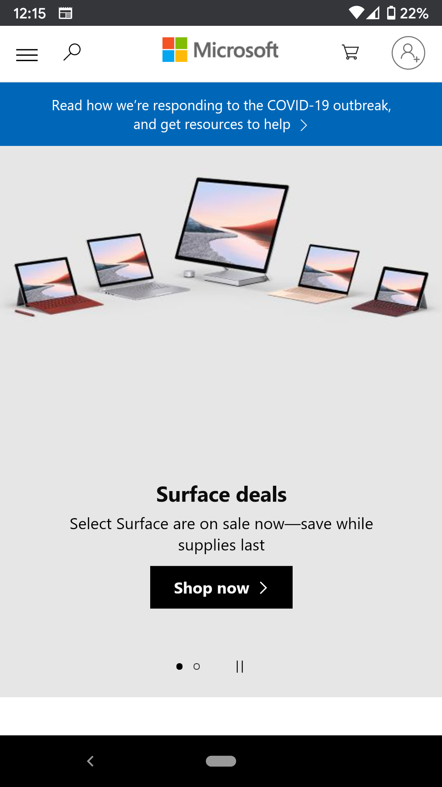

Fitt's Law
Microsoft

Microsoft's home page properly apply Fitt's Law by making their "Shop now" button large and center stage. It makes it easy to press. When I first visited the site I pressed the button almost without thinking. I wasn't even at the site to look at surface products but their use of Fitt's Law was effect in catching my attention.
Visual Hierarchy
The Church of Jesus Christ of Latter-day Saints
The Chruch of Jesus Christ of Latter-day Saints website utilizes Visual Hierarchy by placing importance on larger images and links. At the top of the page you will see a larger banner or two referencing a recent or upcoming event. As you scroll down through the site, the links and images will decrease in size. This gives the impression that the most important or the most recent information is towards the top while older information is lowered toward the bottom.
Hick's Law
Ebay

On Ebay's mobile website, you can filter down to specific categories and criteria. While there are many options available which according to Hick's Law would make it more difficult to make a decision, Ebay handles it very well. Rather than make all or many options available immediatly, it allows you to dirll down slowly. First you select your category, then there are subcategories with each selection. This method removed uneccessary options that can distract form a users choice.